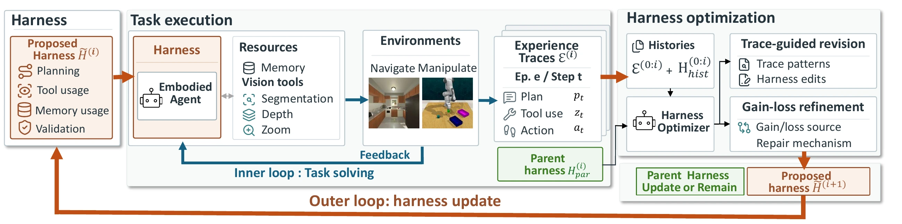
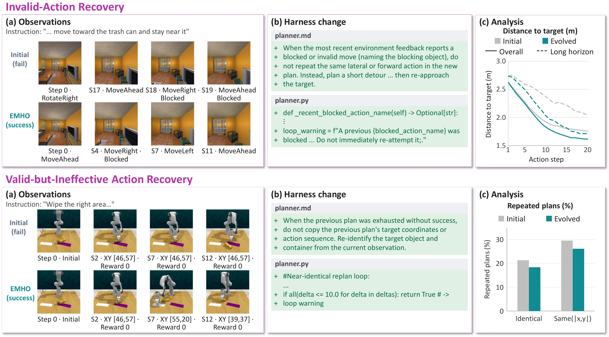
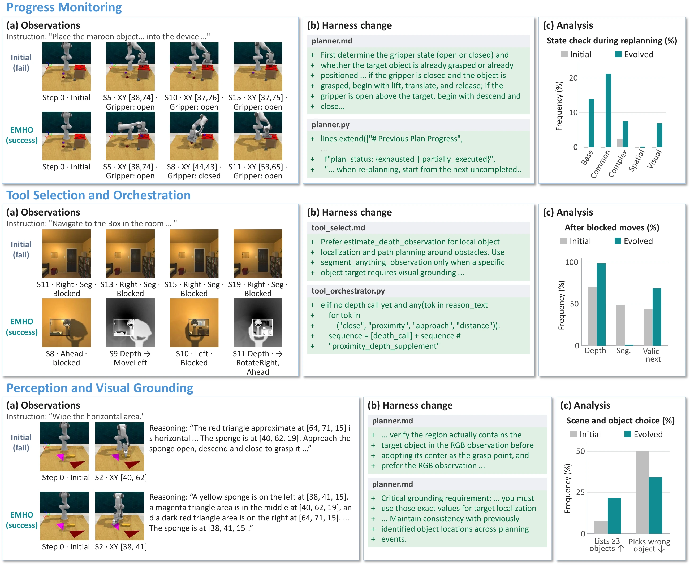

EMHO
EMbodied Agent Harness Optimization
via Experience Traces
1 Korea University2 University of Arkansas3 University of Wisconsin–Madison
Manipulation
“Wipe the right area.” The initial harness (left) fails; the evolved harness (right) succeeds on the same spatial manipulation episode.
Open full-size videoAbstract
Improving embodied agents often focuses on optimizing the underlying model through training, while the surrounding agent harness that controls planning, context, and tool use is typically engineered. We ask whether this harness can instead improve itself directly from experience traces under sparse environmental feedback. We propose EMbodied Agent Harness Optimization (EMHO), a self-evolving framework that keeps the embodied model frozen and iteratively revises its harness by analyzing execution trajectories and prior harness history. EMHO optimizes beyond skills or recovery prompts, modifying how the agent monitors progress, uses vision tools, grounds observations, and responds to failures. To support multiple subtasks with a single harness, we introduce EMHO-Merge, which addresses trade-offs in jointly optimizing a single shared harness across subtasks by using episode-level gains and losses to guide evidence-supported refinement of when and how revised behaviors are applied. We evaluate EMHO on EmbodiedBench across navigation and manipulation tasks, and EMHO consistently improves task success for both Qwen 9B and 27B models. Qualitative analysis shows that EMHO goes beyond recovering from failures and unproductive actions to reshape how the embodied agent interprets and interacts with its environment.
Method Overview

Results
EMHO improves task success on EmbodiedBench for both model sizes across navigation and manipulation.
Held-out success rate · Initial harness → EMHO
Navigation
- Qwen3.5-9B
- 48.7%56.7%+8.0 pp
- Qwen3.8-27B
- 66.0%75.3%+9.3 pp
Manipulation
- Qwen3.5-9B
- 10.7%21.0%+10.3 pp
- Qwen3.8-27B
- 26.4%39.4%+13.0 pp
Success rates (%). EMHO entries report the best score on each split over 10 optimization iterations; search and held-out maxima may occur at different iterations. Held-out scores are retrospective summaries, not the performance of a single search-selected harness. No held-out feedback is supplied to the optimizer. Bold entries follow the paper.
| Method / Model | Avg | Base | Common | Complex | Visual | Long |
|---|---|---|---|---|---|---|
| GPT-5 | 56.8 | 62.0 | 62.0 | 68.0 | 50.0 | 42.0 |
| Claude-4.6-Sonnet | 62.2 | 68.0 | 63.0 | 77.0 | 55.0 | 48.0 |
| Gemini-2.0-flash | 48.7 | 63.3 | 65.0 | 50.0 | 51.7 | 13.3 |
| InternVL3-78B | 53.7 | 66.7 | 63.3 | 61.7 | 45.0 | 31.7 |
| gemma-3-27b-it | 45.3 | 53.3 | 45.0 | 61.7 | 50.0 | 16.7 |
| One-Shot Harness w/ Opus (Qwen3.5-9B) | 53.3 | 56.7 | 60.0 | 63.3 | 36.7 | 50.0 |
| One-Shot Harness w/ Sol (Qwen3.5-9B) | 49.3 | 50.0 | 53.3 | 63.3 | 40.0 | 40.0 |
| One-Shot Harness w/ Opus (Qwen3.8-27B) | 67.7 | 78.3 | 70.0 | 75.0 | 58.3 | 56.7 |
| One-Shot Harness w/ Sol (Qwen3.8-27B) | 65.7 | 73.3 | 70.0 | 61.7 | 63.3 | 60.0 |
| Initial Harness (Search, Qwen3.5-9B) | 50.0 | 58.3 | 46.7 | 65.0 | 40.0 | 40.0 |
| Initial Harness (Held-out, Qwen3.5-9B) | 48.7 | 58.3 | 53.3 | 58.3 | 33.3 | 40.0 |
| EMHO (Search, Qwen3.5-9B) | 63.0 | 71.7 | 70.0 | 70.0 | 50.0 | 53.3 |
| EMHO (Held-out, Qwen3.5-9B) | 56.7 | 66.7 | 60.0 | 65.0 | 40.0 | 51.7 |
| Initial Harness (Search, Qwen3.8-27B) | 54.7 | 60.0 | 60.0 | 50.0 | 50.0 | 53.3 |
| Initial Harness (Held-out, Qwen3.8-27B) | 66.0 | 73.3 | 63.3 | 66.7 | 66.7 | 60.0 |
| EMHO (Search, Qwen3.8-27B) | 67.3 | 76.7 | 76.7 | 63.3 | 63.3 | 56.7 |
| EMHO (Held-out, Qwen3.8-27B) | 75.3 | 86.7 | 76.7 | 73.3 | 76.7 | 63.3 |
| Method / Model | Avg | Base | Common | Complex | Visual | Spatial |
|---|---|---|---|---|---|---|
| GPT-5 | 26.8 | 21.0 | 25.0 | 31.0 | 22.0 | 35.0 |
| Claude-4.6-Sonnet | 37.6 | 40.0 | 35.0 | 40.0 | 36.0 | 37.0 |
| Gemini-2.0-flash | 16.5 | 14.6 | 8.3 | 14.6 | 13.9 | 31.3 |
| InternVL3-78B | 26.3 | 29.2 | 22.9 | 22.9 | 25.0 | 31.3 |
| gemma-3-27b-it | 17.5 | 25.0 | 16.7 | 16.7 | 8.3 | 20.8 |
| One-Shot Harness w/ Opus (Qwen3.5-9B) | 13.2 | 10.4 | 16.7 | 12.5 | 13.9 | 12.5 |
| One-Shot Harness w/ Sol (Qwen3.5-9B) | 11.8 | 12.5 | 6.3 | 10.4 | 11.1 | 18.8 |
| One-Shot Harness w/ Opus (Qwen3.8-27B) | 27.8 | 22.9 | 20.8 | 29.2 | 38.9 | 27.1 |
| One-Shot Harness w/ Sol (Qwen3.8-27B) | 25.3 | 25.0 | 25.0 | 27.1 | 22.2 | 27.1 |
| Initial Harness (Search, Qwen3.5-9B) | 9.7 | 8.3 | 8.3 | 6.3 | 11.1 | 14.6 |
| Initial Harness (Held-out, Qwen3.5-9B) | 10.7 | 6.3 | 4.2 | 8.3 | 22.2 | 12.5 |
| EMHO (Search, Qwen3.5-9B) | 18.3 | 14.6 | 12.5 | 16.7 | 25.0 | 22.9 |
| EMHO (Held-out, Qwen3.5-9B) | 21.0 | 14.6 | 20.8 | 18.8 | 36.1 | 14.6 |
| Initial Harness (Search, Qwen3.8-27B) | 23.9 | 16.7 | 12.5 | 29.2 | 44.4 | 16.7 |
| Initial Harness (Held-out, Qwen3.8-27B) | 26.4 | 25.0 | 25.0 | 29.2 | 27.8 | 25.0 |
| EMHO (Search, Qwen3.8-27B) | 44.2 | 50.0 | 41.7 | 37.5 | 50.0 | 41.7 |
| EMHO (Held-out, Qwen3.8-27B) | 39.4 | 41.7 | 41.7 | 33.3 | 38.9 | 41.7 |
EMHO-Merge
EMHO-Merge uses episode-level gains and losses to refine when revised behavior should activate in a shared harness. In the 27B three-subtask search setting, it improves average success over combined EMHO from 61.1% to 67.8% for navigation and from 34.7% to 39.8% for manipulation.
| Harness | Navigation | Manipulation |
|---|---|---|
| Initial | 54.4 | 25.9 |
| EMHO · Separate | 65.6 | 47.2 |
| EMHO · Combined | 61.1 | 34.7 |
| EMHO-Merge | 67.8 | 39.8 |
Paper, Table 3. Navigation includes Base, Visual Appearance, and Long Horizon; manipulation includes Base, Visual Appearance, and Spatial Relationship. These are three-subtask averages. Separate EMHO uses a distinct harness for each subtask and remains stronger than EMHO-Merge on manipulation.
Qualitative Analysis
What changes when the model stays frozen but its harness evolves? We compare initial and evolved behavior on held-out trajectories, primarily with the 27B model, and group the changes into five types.
Recovery Edits
Recovery edits govern what happens after an action fails or the trajectory stops making progress. The key distinction is whether the environment reports a failure or the harness must recognize ineffective behavior itself.

Invalid-Action Recovery
Use explicit failure feedback to change the next attempt. A blocked or invalid action becomes a constraint on subsequent planning. In navigation, EMHO retains blocked directions and prompts the agent to reorient or take a short detour before approaching the target again. In manipulation, it carries execution errors, such as path-generation failures, into replanning so the agent can revise the target location or approach direction.
Valid-but-Ineffective Action Recovery
Recognize lack of progress even when actions are valid. Repeated rotations, reversals, or grasp attempts can execute successfully without completing the task. EMHO checks recent actions and observations for these patterns and requires a meaningful change in strategy. Navigation can break out of rotation loops; manipulation can revise the grasp point, approach height, or object estimate instead of reissuing the same plan.
In the manipulation analysis, identical replans decrease from approximately 21% to 18%, and repeated grasps at the same coordinates from approximately 30% to 26%.
Non-Recovery Edits
Non-recovery edits shape ongoing decisions without requiring a failure signal. They change how the agent tracks progress, selects useful visual evidence, and connects what it sees to its next action.

Progress Monitoring
Track what has changed and what remains to be done. In navigation, EMHO compares successive views, including the target's apparent position and size, to assess whether motion is bringing the agent closer. In manipulation, it tracks approach, grasp, lift, translate, and release. The current gripper and object state guide the next unfinished phase, helping the agent continue a partially completed task instead of restarting the sequence.
Tool Selection and Orchestration
Choose vision tools for the uncertainty that matters next. Depth estimation supports obstacle, proximity, and clearance reasoning; segmentation helps identify a target; and zoom reveals finer details in a relevant region. In the navigation example, the evolved harness uses depth after blocked moves to inform its next action. In manipulation, it requests depth proactively for height-sensitive interactions such as stacking and container placement.
After blocked navigation moves, depth-tool use rises from approximately 70% to nearly 100%, alongside an increase in valid subsequent actions from approximately 44% to 68%.
Perception and Visual Grounding
Connect the intended object to an action grounded in the current view. Navigation compares candidate targets using attributes from the instruction and uses the selected visual evidence to guide motion. Manipulation distinguishes object identity from executable grasp coordinates and re-evaluates both during planning. In the wiping example, the evolved harness distinguishes the sponge from the colored surface regions and selects the sponge's location.
In the spatial-relation analysis, incorrect object selection in initial plans decreases from 50% to 34%. This measures object choice during planning, rather than fine-grained grasp-coordinate accuracy.
These are behavioral measurements, not overall task success rates. See Section 5 and Appendix D of the paper for the full analyses.